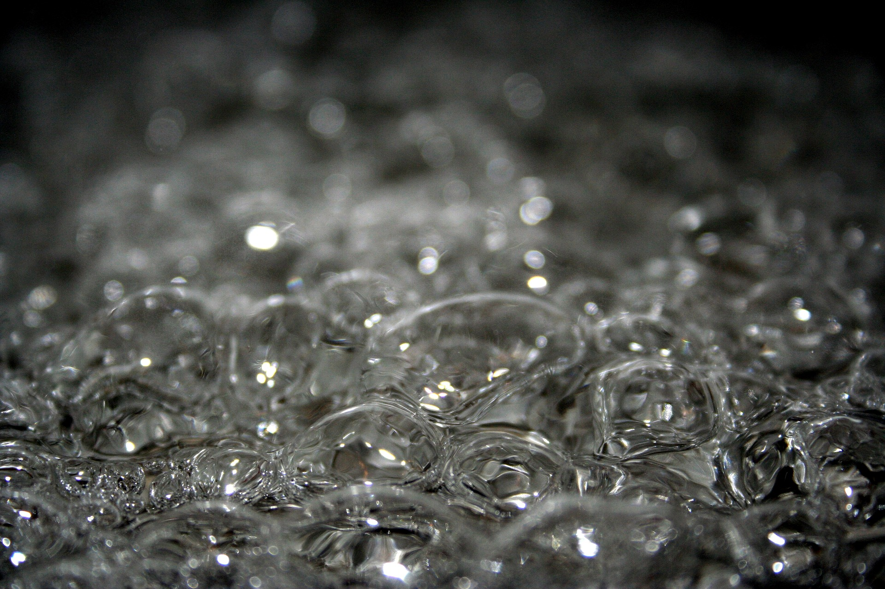

Boiling Water Recipe

Description
This recipe shows you how to boil a pot of water.
Boiling water is useful in many situations, for example for cooking pasta, making tea
or getting second degree burns.
Ingredients
- Water, desired amount
- Some more water, because some will boil off
Steps
- Put the water in a pot, pan, kettle or cauldron
- Put the pot, pan, kettle or cauldron on the stovetop or a campfire over high heat
- Wait till the water starts to boil
- Enjoy a nice refreshing cup of boiling water
- Special Tip: If you freeze some boiling water, it keeps for a long time. This might
come in handy when you're in need of some boiling water.